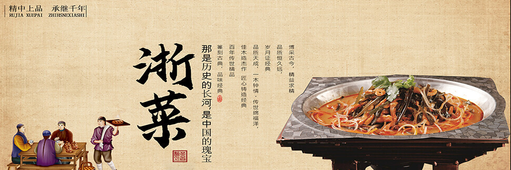

中国八大菜系之浙江菜
首页
浙江菜介绍
经典菜品
菜系特色
菜品评价
在线交流

浙江菜特点
以“细、特、鲜、嫩”为原则，精选时令特产鲜活原料，取精华部位，如河鲜现杀、笋取嫩尖，凸显食材本味
擅长炒、炸、烩、熘、蒸、烧六法，尤以滑炒、卷炸见长，火候精准，如西湖醋鱼沸水汆熟，嫩滑无腥
强调原料本色真味，辅以绍酒、葱姜去腥提鲜，如东坡肉以酒代水焖制，醇香不腻
介于粤菜清淡与川菜浓重之间，以鲜笋、火腿等增香，汤菜鲜滑如宋嫂鱼羹，咸鲜合一
菜品讲究清秀造型，如薄片火腿拱桥摆盘，蟹酿橙以果为皿，南宋时已重食器美学
名菜多附历史典故，如东坡肉、叫化鸡源自文人轶事，南宋《梦粱录》记载食雕技艺
取材特点
精细取料，突出精华 浙江菜选料遵循“细”字原则，注重选取食材的精华部位，如河鲜现杀取嫩肉、春笋仅用尖部，确保菜品口感细腻高雅。例如“薄片火腿”仅用金华火腿肥瘦相间处，厚薄均匀如拱桥造型
特产优先，地域性强 强调选用浙江地理标志性食材，如金华火腿、绍兴黄酒、舟山黄鱼等，结合四季时令特产（如春笋、秋蟹），凸显地方风味。如宁波菜以东海海鲜为主，绍兴菜善用麻鸭与干菜。
鲜活为本，追求原味 食材多现采现烹，海鲜河鲜要求活杀现制，蔬菜讲究时鲜采摘，最大限度保留天然鲜味。例如“西湖醋鱼”需活鱼现杀沸水汆熟，不加油腥以突出嫩滑。
时令嫩材，讲究新嫩 遵循“四时之序”，选用当季最鲜嫩原料，如春季嫩笋、夏季茭白、秋季湖蟹、冬季冬笋，确保菜品清鲜爽脆。如“龙井虾仁”须采清明前龙井茶与鲜活河虾仁搭配。